Copy of oro.nifti's orthographic function
with some tweaks such as adding L/R designations for left and right
ortho2(
x,
y = NULL,
xyz = NULL,
w = 1,
col = gray(0:64/64),
col.y = oro.nifti::hotmetal(),
zlim = NULL,
zlim.y = NULL,
NA.x = FALSE,
NA.y = TRUE,
crosshairs = TRUE,
col.crosshairs = "red",
xlab = "",
ylab = "",
axes = FALSE,
oma = c(0, 0, 0, ifelse(ycolorbar, 5, 0)),
mar = rep(0, 4),
bg = "black",
text = NULL,
text.color = "white",
text.cex = 2,
text.x = 32,
text.y = 32,
add.orient = FALSE,
mfrow = c(2, 2),
ybreaks = NULL,
breaks = NULL,
addlegend = FALSE,
leg.x = 32,
leg.y = 32,
legend,
leg.col,
leg.title = NULL,
leg.cex,
window = NULL,
ycolorbar = FALSE,
clabels = TRUE,
add = TRUE,
pdim = NULL,
useRaster = is.null(y),
mask = NULL,
...
)Arguments
- x
is an object of class nifti or similar.
- y
is an object of class nifti or similar for the overlay.
- xyz
is the coordinate for the center of the crosshairs.
- w
is the time point to be displayed (4D arrays only).
- col
is grayscale (by default).
- col.y
is hotmetal (by default).
- zlim
is the minimum and maximum `z' values passed into image.
- zlim.y
is the minimum and maximum `z' values passed into image for the overlay.
- NA.x
Set any values of 0 in
xtoNA- NA.y
Set any values of 0 in
ytoNA- crosshairs
is a logical value for the presence of crosshairs in all three orthogonal planes (default = TRUE).
- col.crosshairs
is the color of the crosshairs (default = red).
- xlab
is set to "" since all margins are set to zero.
- ylab
is set to "" since all margins are set to zero.
- axes
is set to FALSE since all margins are set to zero.
- oma
is the size of the outer margins in the par function.
- mar
is the number of lines of margin in the par function.
- bg
is the background color in the par function.
- text
allows the user to specify text to appear in the fourth (unused) pane.
- text.color
is the color of the user-specified text (default = ``white").
- text.cex
is the size of the user-specified text (default = 2).
- text.x
x coordinate for text
- text.y
y coordinate for text
- add.orient
(logical) Add left/right, A/P, etc. orientation
- mfrow
(numeric) layout of the 3 slices
- ybreaks
(numeric) breaks for y to passed to
image- breaks
(numeric) breaks for x to passed to
image- addlegend
(logical) add legend?
- leg.x
(numeric) x coordinate for legend
- leg.y
(numeric) y coordinate for legend
- legend
(character) legend text
- leg.col
(character) Colors for legend
- leg.title
(character) title for legend
- leg.cex
(numeric)
cexforlegend- window
(vector) Length-2 vector to limit image to certain range
- ycolorbar
(logical) Should a colorbar for
ybe plotted- clabels
Label for colorbar (see
colorbar)- add
Should the y-plot be added or its own plot? Used in
double_ortho- pdim
Pixel dimensions if passing in arrays. Will be overridden if
xis aniftiobject- useRaster
logical; if TRUE a bitmap raster is used to plot the image instead of polygons. Passed to
image.- mask
If a mask is passed,
drop_empty_dimis applied to bothxandy- ...
other arguments to the image function may be provided here.
See also
Examples
set.seed(10)
x = oro.nifti::nifti(array(rnorm(1000), dim = rep(10, 3)))
ortho2(x)
 y = x > 2
mask = x > 2.5
ortho2(x, y)
y = x > 2
mask = x > 2.5
ortho2(x, y)
 ortho2(x, y, mask = mask, add.orient = TRUE)
ortho2(x, y, mask = mask, add.orient = TRUE, add = FALSE)
ortho2(x, y, mask = mask, add.orient = TRUE)
ortho2(x, y, mask = mask, add.orient = TRUE, add = FALSE)

 nim = RNifti::asNifti(x, internal = FALSE)
ortho2(nim, y, mask = mask)
nim = RNifti::asNifti(x, internal = FALSE)
ortho2(nim, y, mask = mask)
 neurobase::ortho2(nim, x, mask = mask,
ybreaks = seq(min(x), max(x), length.out = 65), ycolorbar = TRUE)
ortho2(nim, y, mask = mask, add = FALSE)
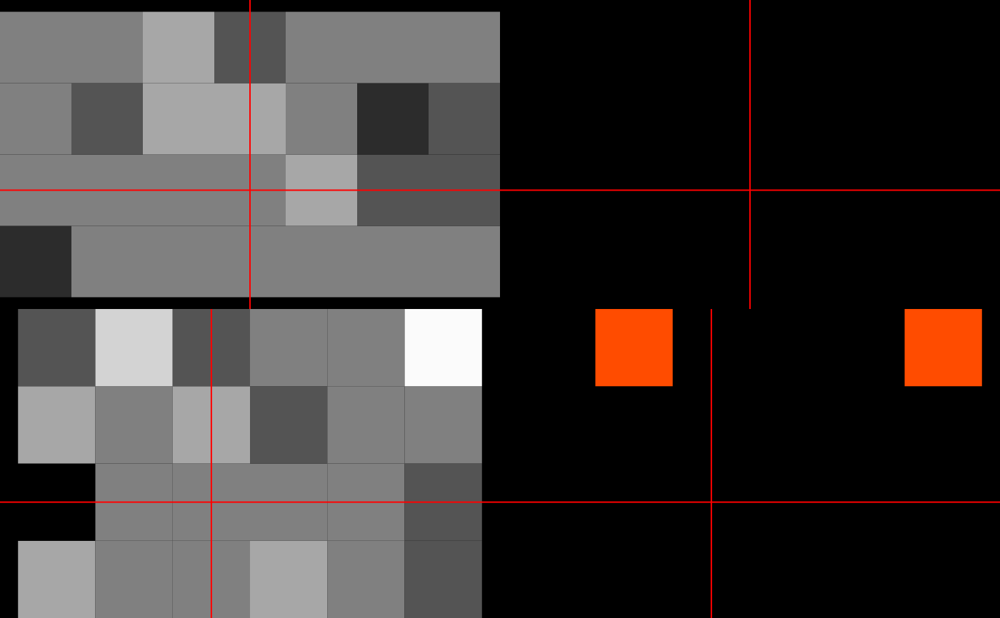
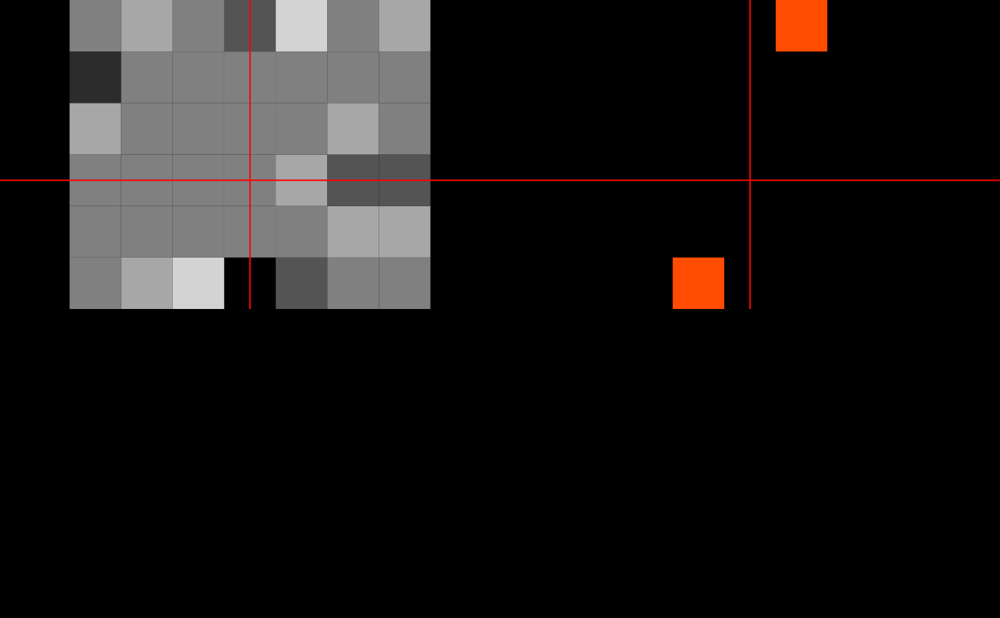
arr_x = as.array(x)
arr_y = as.array(y)
ortho2( arr_x)
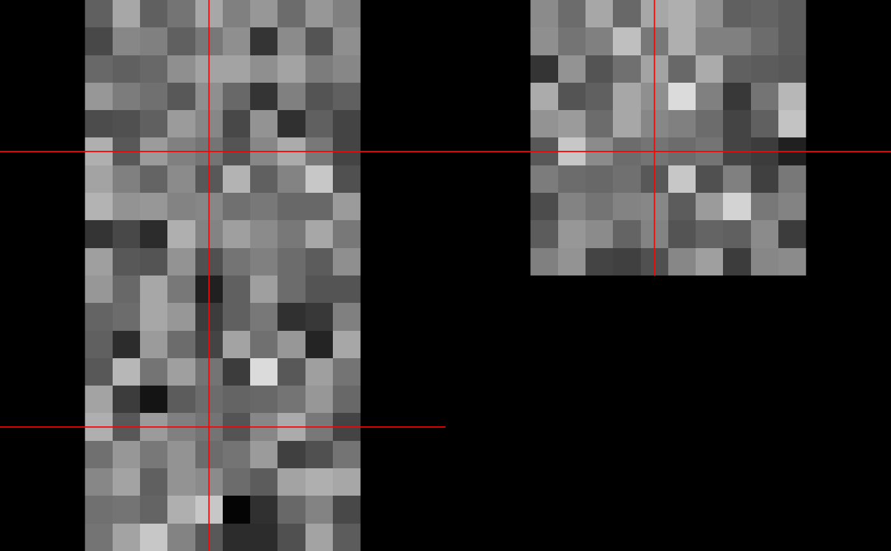
ortho2( arr_x, arr_y, useRaster = FALSE)
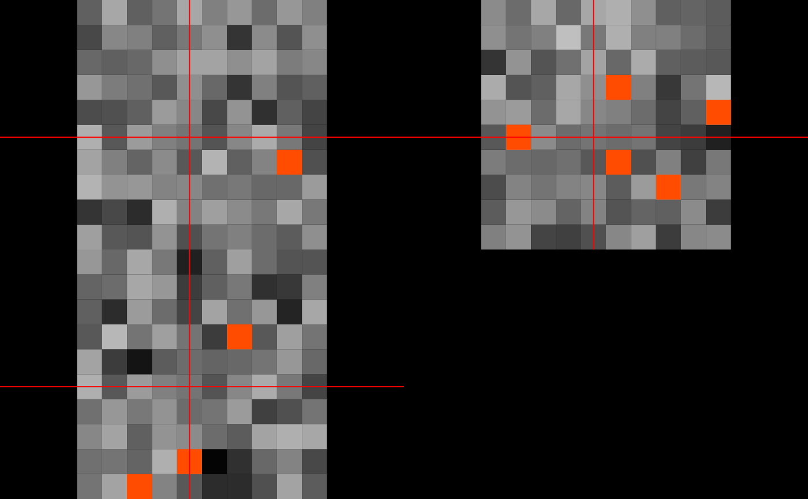
set.seed(10)
x = oro.nifti::nifti(array(rnorm(10000), dim = rep(10, 4)))
y = x > 2
mask = x > 2.5
ortho2(x, y)
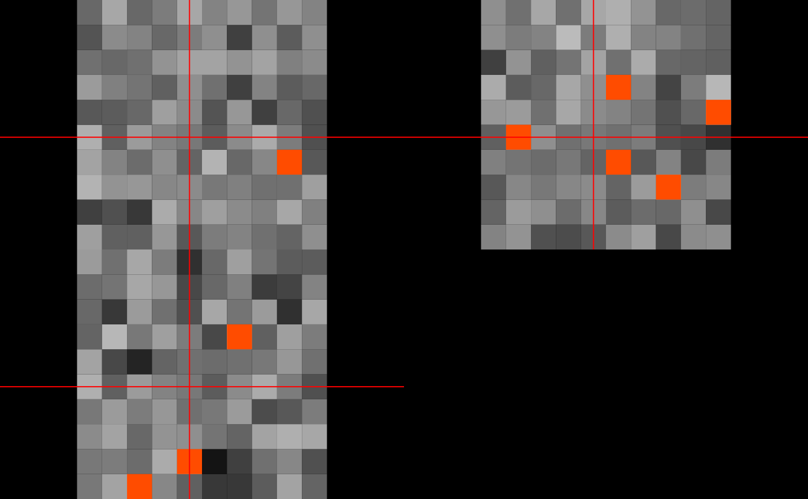
set.seed(10)
x = oro.nifti::nifti(array(rnorm(100), dim = rep(10, 2)))
y = x > 2
mask = x > 2.5
ortho2(x, y)
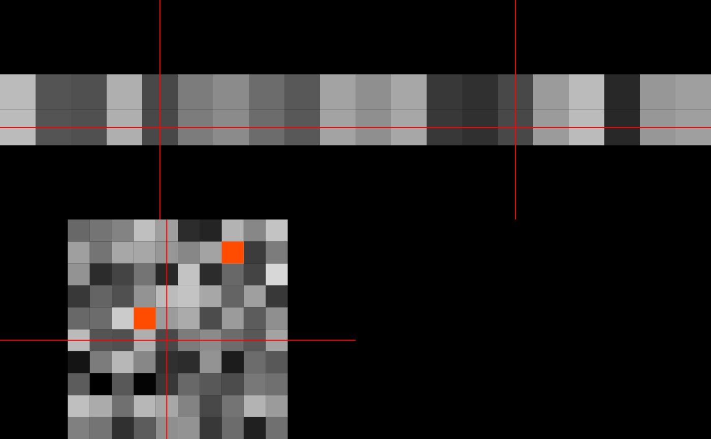
neurobase::ortho2(nim, x, mask = mask,
ybreaks = seq(min(x), max(x), length.out = 65), ycolorbar = TRUE)
ortho2(nim, y, mask = mask, add = FALSE)
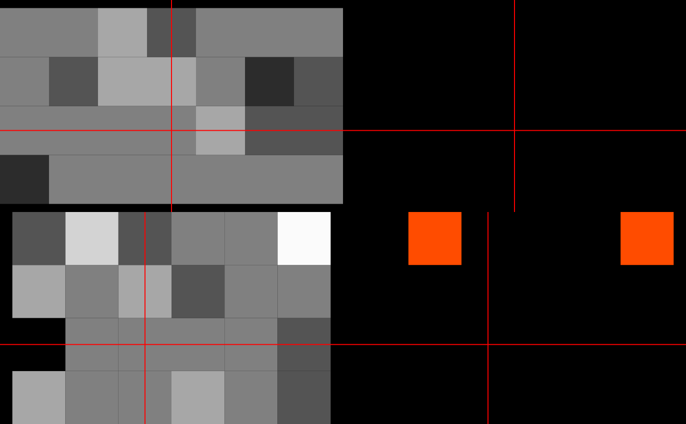
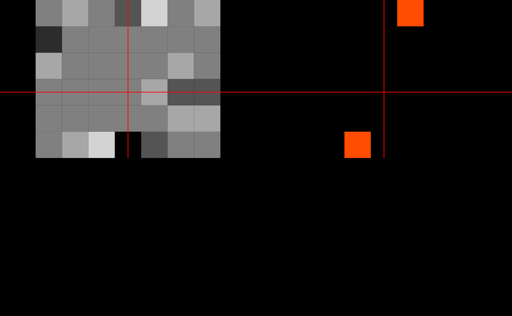
arr_x = as.array(x)
arr_y = as.array(y)
ortho2( arr_x)
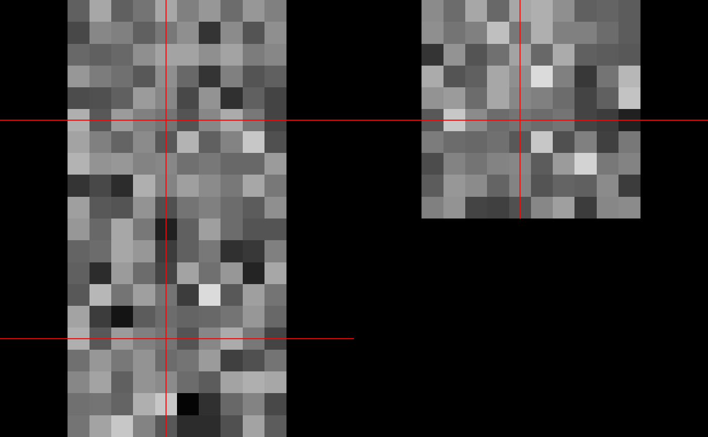
ortho2( arr_x, arr_y, useRaster = FALSE)
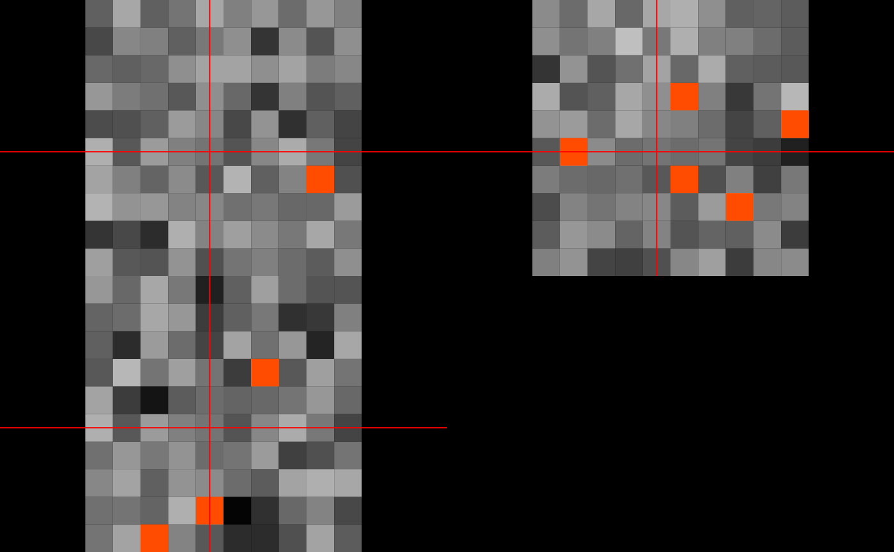
set.seed(10)
x = oro.nifti::nifti(array(rnorm(10000), dim = rep(10, 4)))
y = x > 2
mask = x > 2.5
ortho2(x, y)
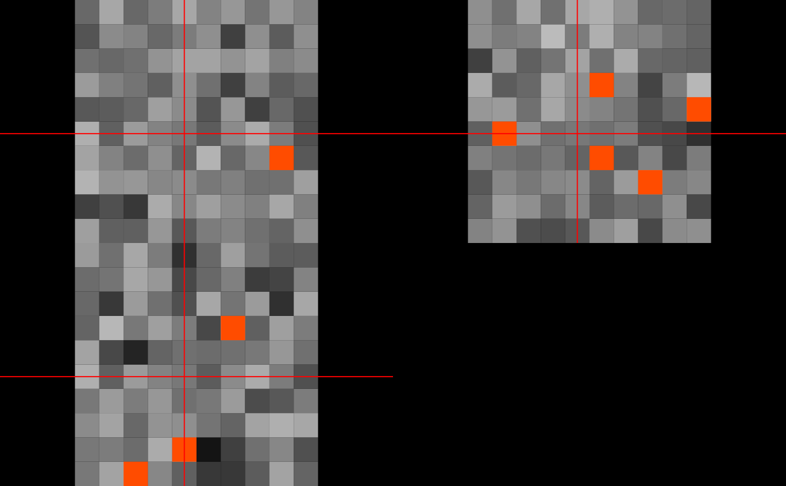
set.seed(10)
x = oro.nifti::nifti(array(rnorm(100), dim = rep(10, 2)))
y = x > 2
mask = x > 2.5
ortho2(x, y)
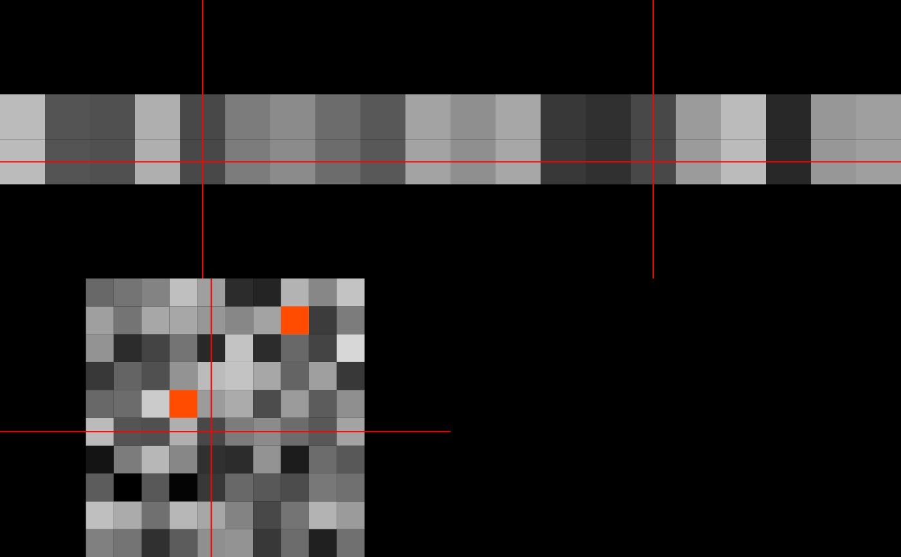